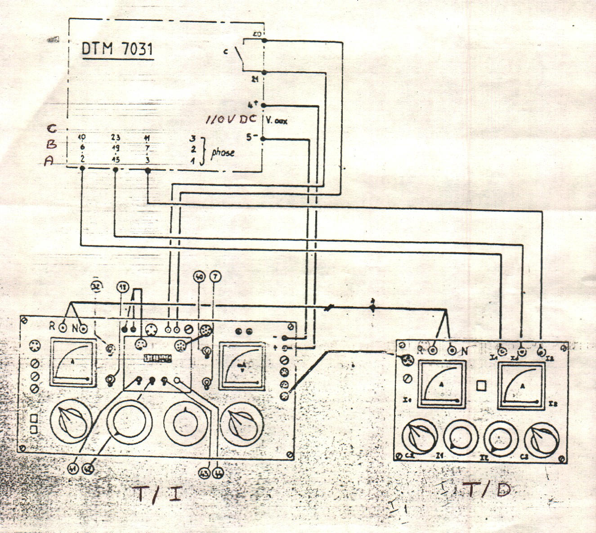
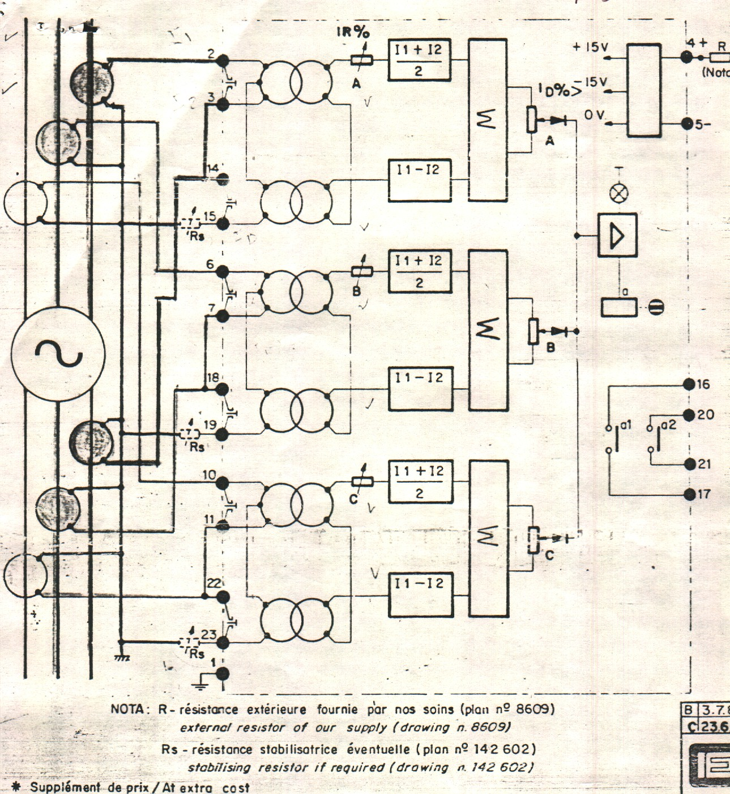

|
 |
|
Protection
|
Technical Procedure
|
|
|
Equipment
Differential Relay
DTM 7031
CEE |
Document
No: DfR-023-r0 |
|
Issued
to: Aswan Dam 2 PS |
|
Status: APPROVED |
|
Procedure:
Using Secondary Injection Set TREF (P1-Y1) |
Approved Date: 18
April 2005 |
|
Date to
be Reviewed: April 2010 |
Introduction
This document outlines the testing procedure P1, which must be performed on an
annually bases as indicated by Y1 in the title block.
The DTM 7031 relay are designed to bring generator out of service when an
internal fault happens on the stator windings and the differential current
exceeds apre-determined setting
The first draft initiated,
tested
by eng. Mohamed Abdel Moreed, and approved by eng Mohamed Abdel
Baset head sector of Aswandam hydlolic Power Station
and certified by eng.
Kamel Raghib Hakem HEPC MPIS Coordinator.
Safety Precautions
-
A work permit must be issued and the maintenance staff should carry the
suitable safety category
-
Maintenance staff should be well trained
qualified or directly supervised by some one who is
-
Safety fence with caution marks
surrounding the work area is required
-
Personal protective equipment must be
used as safety shoes, helmet ... etc
-
The generator must be isolated
-
Switch off the DC power supply before
inserting or withdrawing the relay
Tools and Equipment
Work to be Carried Out
-
Check the minimum operating
differential current
-
Check the time delay
-
Check the trip signal to generator
circuit breaker
-
Check the signal alarm
-
Check the indication flag
Preparation
-
Connect the secondary injection test
set to AC supply
-
Withdraw the relay from its case
-
The relay connections must be in
accordance with the connection diagram supplied with the relay as in attached
figure
-
Review the test certificate for
required setting
Checking the
Differential Operating Level
Checked the differential operating level of this relay on each h phase by
injecting successively into terminals 2 and 15.6 and 19.10 and 23 using the
current source.
Pick up the output unit for a value of current equal to that set on
the ID % potentiometers
Checking the
Operating Time
-
Inject the current source on one of the phases simultaneously
starting the timer and the timer must be stopped by the change of state of the
contacts on the output unit
Checking
the Restraint Setting
-
Adjust currents I1 and I2 (D case) at
twice the relay normal current.
-
Vary the differential current Id
using the (T/I case) until operation of the output unit is attained on each
phase and the tripping level is obtained
Equation to
be used in derive the tripping level is
Is = In (ID + IR (I1 + I2) / 2* In - 0.5)
Where In = relay nominal (5A)
ID = differential setting in percent
IR = restraint setting in
present
I1 = I2 = 2* In
Test Sheet
Relay function : Generator
differential relay
Manufacturer : CEE
Relay identification : GD
Location
Name : RPU
Relay type : DTM 7031
Serial no. ................................... Rated current : 5A
Range : ID 2- 15% and IR 2- 20% Relay
setting : ID 5% and IR 15%
Checking
Trip function : OK Alarm function : OK
Test Results
Differential level setting Id
|
Setting Id in % |
Reference value |
Reading value |
Time
< 60 ms |
|
Ph1 (A) |
0.25 |
|
|
|
Ph2 (A) |
0.25 |
|
|
|
Ph3 (A) |
0.25 |
|
|
Differential level setting Id with Ir
= 2 In
| Setting Id in % |
Reference value |
Reading value |
| Ph1 (A) |
1.375 |
|
| Ph2 (A) |
1.375 |
|
| Ph3 (A) |
1.375 |
|
Final Setting
ID=5%
IR= 15%


Checked by:
Signature:
Date: